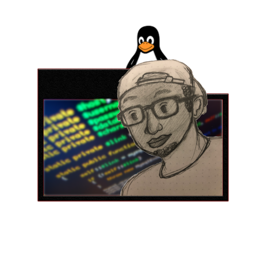

Chukwudi Ikem - CPSC 311 - My Portfolio
High Value | Low Consequence
High Value | Low Consequence
My name is Chukwudi Ikem, I am creating this website through GitHub Pages. This is my first time
using HTML5. I feel that it is important to explain my interest in the computer science field.
I am pursuing an internship as a software engineer that will promote growth in my computer science
techniques. I wish to make strides in the technological field, specifically in the realm of video games. I also intend to give back to those who have helped me
get to where I am right now, and to those that will help me be who I can be in the future. In this website, you will find a bit of the writing projects that I had completed
during my time in CPSC 311 (Technical Writing). I also want to include some of the projects I worked on in C#, these projects establish the basis of video game development.
This is my second year immersed in the computer science field, I hope this website can give you insight on the type of character that I have as well as how minimalistic this website is.
I am sure as time goes on and I gain a better understanding of HTML and CSS, I will improve on the website accordingly.
My inspiration for software engineering is quite an interesting one. It is not that I am obsessed with programming (although
I do love the pleasure that it gives me.) I have a deeper motivation. It seems as though African Americans in the United States
are not interested in the sciences (relatively speaking). I have taken more than 10 math and computer science classes whether it be Pre-Calculus,
Calculus I, II, III, Linear Algebra & Differential Equations, Intro to Programming, Object-Oriented, Data Structures, Assembly,
Technical Writing, so on and so forth. In all of those classes I have only ever seen
one other Black/African American in there.
Hence, my motivation is not to be the best programmer in the world, but to be the most inspirational. I want to be good enough to give back to my community and to inspire those who believe that programming is not for them. I am quite tired of seeing my brothers and sisters dismissing the realm of computer science entirely because it is not within their interests. I wish to extend the interests of our people and inspire them to venture into the sciences.